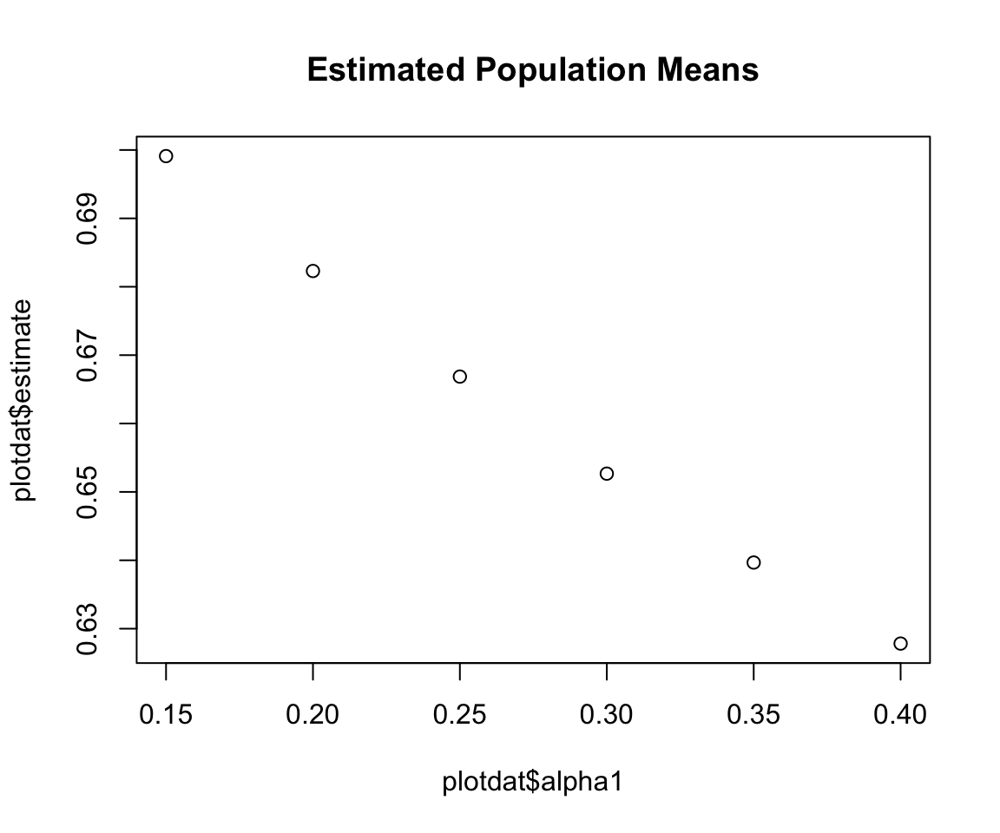

policyFX with clusteredinterference
vignettes/estimate-policyFX.Rmd
estimate-policyFX.RmdFirst, load the clusteredinterference package
Now load a quick data example that’s included in the package
Estimation is implemented with the policyFX() function:
set.seed(1113)
causal_fx <- policyFX(
data = toy_data,
formula = Outcome | Treatment ~ Age + Distance + (1 | Cluster_ID) | Cluster_ID,
alphas = c(.3, .5),
k_samps = 1
)The policyFX() function outputs a "policyFX" object, which works well with a few methods, including:
summary(causal_fx)
#> ------------- causal estimates --------------
#> estimand estimate se LCI UCI
#> mu(0.3) 0.6523 0.0635 0.5279 0.7767
#> mu(0.5) 0.6075 0.0505 0.5086 0.7063
#> mu0(0.3) 0.6707 0.0736 0.5264 0.8151
#> mu0(0.5) 0.5849 0.0728 0.4422 0.7276
#> mu1(0.3) 0.2799 0.0563 0.1695 0.3902
#> mu1(0.5) 0.3974 0.0577 0.2842 0.5105
#> OE(0.5,0.3) -0.0449 0.0366 -0.1165 0.0268
#> OE(0.3,0.5) 0.0449 0.0366 -0.0268 0.1165
#>
#> ... and 4 more rows ...
#>
#> -------------- treatment model -------------
#> Generalized linear mixed model fit by maximum likelihood (Adaptive
#> Gauss-Hermite Quadrature, nAGQ = 2) [glmerMod]
#> Family: binomial ( logit )
#> Formula: Treatment ~ Age + Distance + (1 | Cluster_ID)
#> Data: data
#> AIC BIC logLik deviance df.resid
#> 137.0345 147.3743 -64.5172 129.0345 94
#> Random effects:
#> Groups Name Std.Dev.
#> Cluster_ID (Intercept) 1.18
#> Number of obs: 98, groups: Cluster_ID, 30
#> Fixed Effects:
#> (Intercept) Age Distance
#> -1.44609 -0.00851 0.26097
#>
#> ------------- propensity scores -------------
#> 1 2 3 4 5 6 7 8 9 10
#> 0.105 0.162 0.086 0.102 0.167 0.045 0.244 0.0934 0.0765 0.197
#> 11 12 13 14 15 16 17 18 19 20
#> 0.0653 0.281 0.104 0.365 0.0867 0.198 0.207 0.106 0.0847 0.134
#> 21 22 23 24 25 26 27 28 29 30
#> 0.103 0.111 0.105 0.302 0.0434 0.0943 0.0443 0.0512 0.13 0.263
#> ---------------------------------------------data
A data.frame. At present, tibbles are coerced back to standard data.frames. I also recommend against using factors in the columns.
alphas
A numeric vector of probabilities corresponding the the policies of interest. Each must be between 0 and 1.
k_samps
The user must specify the number of sum-sampled vectors for estimating the counterfactual probabilities (nuisance parameters). It is recommended to choose k_samps <=5. To avoid the sub-sampling approximation and use all possible vectors, set k_samps=0.
root_options = NULL
This is for rootSolve::multiroot() used in the point estimation procedure. E.g., this will be passed in:
nAGQ=2
This is for lme4::glmer(). The default in glmer() is nAGQ=1, which indicates a Laplace approximation to the log-likelihood. Instead, in this package the default is nAGQ=2, which indicates that n=2 Adaptive Gaussian Quadrature points will be used. This is slightly slower but is a more accurate calculation. In limited testing, it seems that nAGQ=2 was almost as accurate as higher values, so 2 was chosen as the default. See their documentation for more details.
In the event you’re only interested in a subset of contrasts, you can pass a customized grid into the function.
my_grid <- makeTargetGrid(alphas = (3:8)/20, small_grid = TRUE)
head(my_grid)
#> alpha1_num alpha2_num trt alpha1 alpha2 estimand effect_type estVar
#> 1 1 NA NA 0.15 NA mu outcome TRUE
#> 2 2 NA NA 0.20 NA mu outcome TRUE
#> 3 3 NA NA 0.25 NA mu outcome TRUE
#> 4 4 NA NA 0.30 NA mu outcome TRUE
#> 5 5 NA NA 0.35 NA mu outcome TRUE
#> 6 6 NA NA 0.40 NA mu outcome TRUEThis can be particularly useful for plotting, as you can “turn off” the variance estimates
This is available through the dots argument. Note that when supplying a custom target_grid, it’s not necessary to specify the alphas argument, as that is taken directly from target_grid.
causal_fx2 <- policyFX(
data = toy_data,
formula = Outcome | Treatment ~ Age + Distance + (1 | Cluster_ID) | Cluster_ID,
# alphas = c(.3, .5),
target_grid = my_grid,
k_samps = 5,
verbose = FALSE,
root_options = list(atol=1e-4)
)
print(causal_fx, nrows = 9)
#> ------------- causal estimates --------------
#> estimand estimate se LCI UCI
#> mu(0.3) 0.6523 0.0635 0.5279 0.77667
#> mu(0.5) 0.6075 0.0505 0.5086 0.70633
#> mu0(0.3) 0.6707 0.0736 0.5264 0.81506
#> mu0(0.5) 0.5849 0.0728 0.4422 0.72760
#> mu1(0.3) 0.2799 0.0563 0.1695 0.39020
#> mu1(0.5) 0.3974 0.0577 0.2842 0.51055
#> OE(0.5,0.3) -0.0449 0.0366 -0.1165 0.02681
#> OE(0.3,0.5) 0.0449 0.0366 -0.0268 0.11651
#> SE0(0.5,0.3) -0.0858 0.0403 -0.1648 -0.00677
#> ... and 3 more rows ...
#> ---------------------------------------------The tidy dataframe estimates can be easily used for plotting:
plotdat <- causal_fx2$estimates[causal_fx2$estimates$estimand_type=="mu",]
plot(x = plotdat$alpha1, y = plotdat$estimate, main = "Estimated Population Means")
As mentioned above, the treatment model is specified via the formula argument. For example, compare:
# Returns the specified formula, coerced to a Formula object
causal_fx$formula
#> Outcome | Treatment ~ Age + Distance + (1 | Cluster_ID) | Cluster_ID
# causal_fx$model is a glmerMod S4 object
causal_fx$model@call
#> lme4::glmer(formula = Treatment ~ Age + Distance + (1 | Cluster_ID),
#> data = data, family = stats::binomial, nAGQ = nAGQ)
lme4::getME(causal_fx$model, c("beta", "theta"))
#> $beta
#> [1] -1.44608710 -0.00850977 0.26096895
#>
#> $theta
#> Cluster_ID.(Intercept)
#> 1.180325